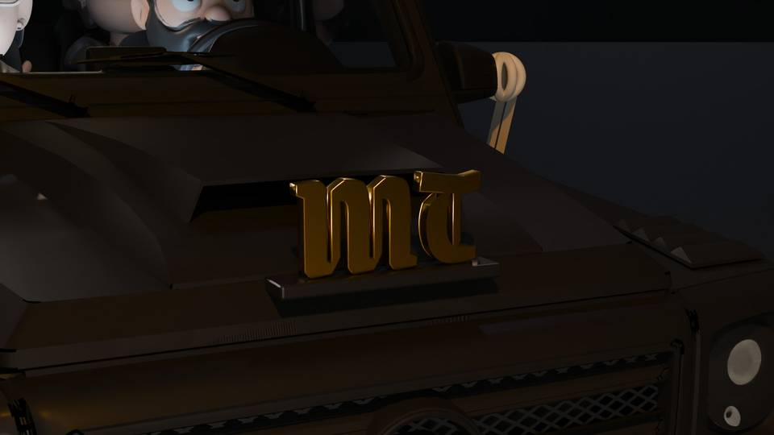
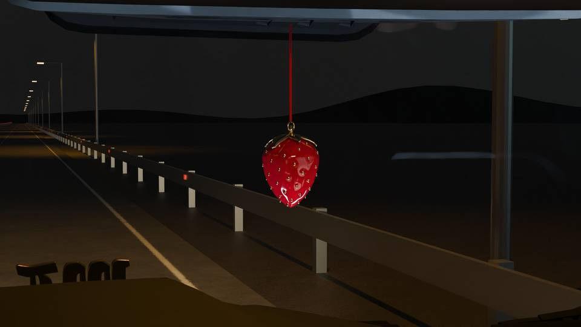
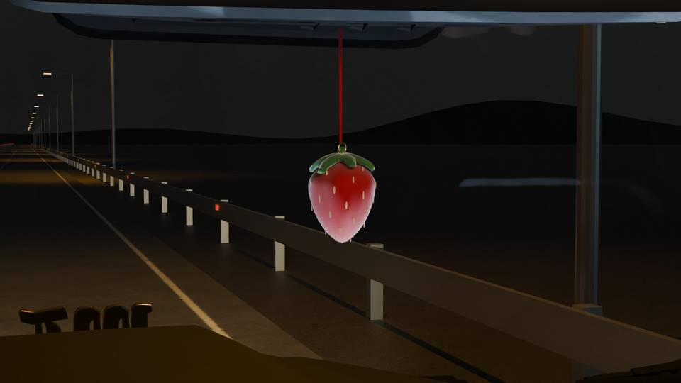
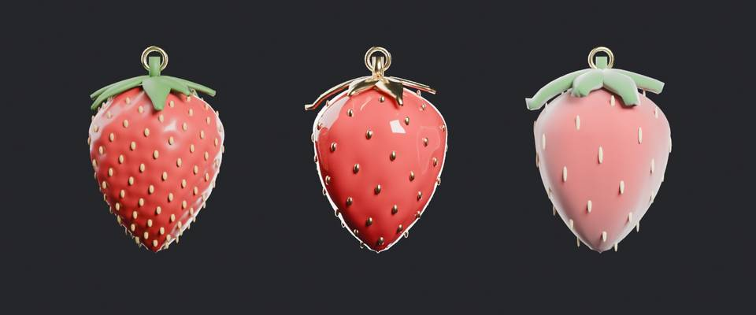

Utilería: lo que eligió el dueño (13 nov, 20:04)
B en todas las escenas, sin marquesina, sin cuernos, la barra de luces real, la fresa nueva y el MT dorado en el cofre. Cada
imagen abre el still completo (1920×1080, 64 muestras, de noche). Los números salen de una sonda por rayos desde la cámara de cada
escena (scripts/props-medir.py); el look se juzga en los stills. Reglas: reglas.md; props:
props.md; fotos: referencias.md.
Las cuatro escenas con lo elegido (B)
B en todas las escenas, sin marquesina, sin cuernos; en el camión las lámparas reales del alerón y el MT dorado en el cofre. La luz bajo la carrocería sigue ámbar. Montón de la caja: caja3 A (#34 sigue abierta). Escena 4 con la luz de relleno (sigue abierta).

- Regla 1 · zona tapada
- 0.79 % · PASS
- Reglas 2-3 · props que se leen
- 1 (P3) · PASS
- Regla 4 · luz total: zona vs prop con luz
- 22.2 vs nan · n/a

- Regla 1 · zona tapada
- 0.0 % · PASS
- Reglas 2-3 · props que se leen
- 1 (P9) · PASS
- Regla 4 · luz total: zona vs prop con luz
- 223.9 vs 54.0 · PASS

- Regla 1 · zona tapada
- 0.0 % · PASS
- Reglas 2-3 · props que se leen
- 3 (P1,P7,P9) · PASS
- Regla 4 · luz total: zona vs prop con luz
- 57.5 vs 23.1 · PASS

- Regla 1 · zona tapada
- 0.0 % · PASS
- Reglas 2-3 · props que se leen
- 2 (P1,P2) · PASS
- Regla 4 · luz total: zona vs prop con luz
- 45.4 vs 10.4 · PASS
Barra de luces: la pieza real
El G 63 AMG 6×6 de fábrica lleva una lámpara LED en cada esquina del alerón del techo: mica clara sobre caja negra con cinco copas redondas (fotos 12b y 12c en referencias.md). El modelo del camión ya tiene esas dos cavidades, apagadas; aquí se llenan y se encienden en blanco, con su haz hacia el camino. Al lado, la otra lectura: la barra de dos pisos del Brabus XLP 800 6×6 (foto 12), que es una pieza del G nuevo (W465), no de este camión.


- Regla 1 · zona tapada
- 0.0 % · PASS
- Reglas 2-3 · props que se leen
- 2 (P1,P2) · PASS
- Regla 4 · luz total: zona vs prop con luz
- 45.4 vs 59.0 · FAIL
Emblema MT dorado en el cofre
Letra gótica Grenze Gotisch ExtraBold (licencia OFL, libre), extruida y biselada, en el oro de la marca (DESIGN.md, oklch 78 % 0.15 85) como metal pulido. En vez de los cuernos.



La fresa del espejo
Un solo archivo intercambiable: blender/props/fresa.glb (Z arriba, metros, origen en la argolla). Si llega un modelo de un amigo, se reemplaza ese archivo y el script lo escala a 4.1 cm.







Preguntas abiertas
- Emblema: (a) de pie, del tamaño actual (letras de unos 14 cm): en la escena 6 ocupa 0.088 % del cuadro, bajo la línea de 0.1 % de la regla 2, así que ahí se ve como un brillo dorado y se lee en los detalles; (b) más grande, para que se lea en la escena 6 (letras de unos 18 cm, casi la mitad del ancho del cofre al frente); o (c) plano sobre el cofre (no se ve desde la cámara baja de la escena 6).
- Fresa: (a) fruta, (b) resina con oro o (c) peluche; o se espera el modelo del amigo (se cambia un archivo).
Ya resuelta (13 nov): la barra de luces son las lámparas de fábrica del 6×6, no la de dos pisos estilo Brabus.
Siguen abiertas, sin decidir aquí: #33 (escena 3, espejo o puerta trasera), #34 (acomodo de la caja) y la luz de la escena 4.